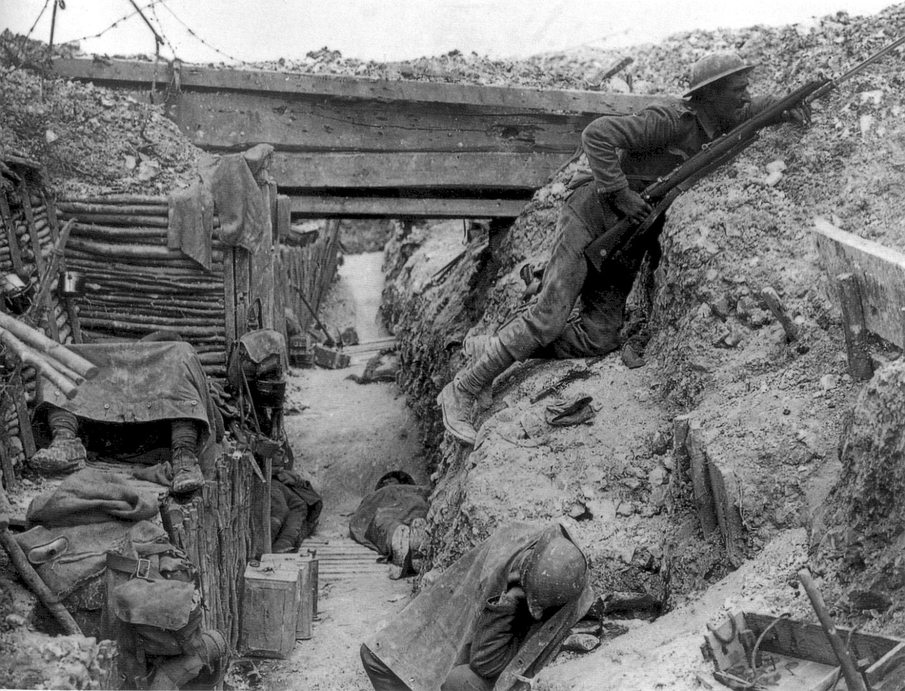

الحرب العالمية الأولى (1914 – 1918)
الحرب الكبرى التي كانت أشد حرب دموية عرفها العالم حتى ذلك الوقت.
اقرأ المقالللحصول على أفضل تجربة
مجلة ذكرى هي منصة تهتم بنشر المقالات والمحتوى المتعلق بالحروب التاريخية. هدفنا هو تقديم محتوى قيم ومفيد للقراء المهتمين بهذا المجال.

الحرب الكبرى التي كانت أشد حرب دموية عرفها العالم حتى ذلك الوقت.
اقرأ المقال
أكبر صراع مسلح في التاريخ من حيث الاتساع وعدد الضحايا.
اقرأ المقال
تنافس سياسي وعسكري وأيديولوجي بين الولايات المتحدة والاتحاد السوفييتي.
اقرأ المقال